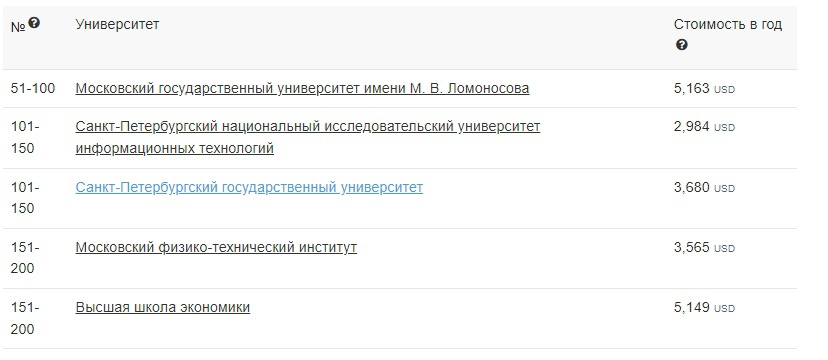

Кто такой программист?
Программист — это специалист, который пишет и тестирует код для программного обеспечения. Термин «программист» может использоваться для обозначения разработчика программного обеспечения, инженера-программиста, специалиста по компьютерам, аналитика программного обеспечения и др.
В обязанности программиста обычно входят: написание программ и приложений на различных компьютерных языках (таких как C++ и Java), создание и совершенствование операционных систем (iOS, Android), разработка веб-сайтов, обновление и расширение существующих программ, проверка программ на наличие ошибок и исправление неисправных строк компьютерного кода, создание и тестирование кода в интегрированной среде разработки (IDE), техническое обслуживание, сетевая архитектура.
При поиске работы можно встретить вакансии по языкам, с которыми работают программисты (программист С++, программист Java, PHP-программист), по типам задач (программист 1С, web-программист, front-end / back-end разработчик) и по уровню (intern, junior, medium, senior).
Зарплата программиста в России и за рубежом
Данные, указанные в таблице, приблизительны.
Преимущества профессии программиста
Недостатки профессии программиста
IT специализации
Специализаций в IT существует огромное множество. Выбирать направление следует из своих интересов, так как каждая специализация имеет свои особенности. Например, если вам нравится прикладное конструирование, то для изучения подойдет робототехника, если же вычислительные задачи, то — фундаментальная информатика. Популярными направлениями в вузах являются Computer Science или прикладная информатика, программная инженерия. Компьютерные науки — общая и разносторонняя отрасль изучения, которая имеет различные ответвления (искусственный интеллект, компьютерные системы и сети, безопасность). Набирает обороты такая специализация, как Data Science, подразумевающая работу со статистикой и математикой.
В качестве перспективных направлений на будущее можно выделить компьютерную безопасность и искусственный интеллект.
Как стать программистом?
Чтобы стать программистом, образование необязательно, тем более что сфера IT развивается со скоростью света и традиционные вузы и колледжи не успевают за новшествами науки. Однако опытные специалисты все равно настаивают на получении высшего или хотя бы среднего специального образования. Чтобы самостоятельно освоить сферу IT, потребуется гораздо больше времени и усилий, чем в вузе, где уже есть наработанный учебный план, система обучения, стимулы в виде оценок и наставники, знающие свой предмет. Если же все-таки ваш выбор — самостоятельное обучение, то необходимо запастись терпением и упорством. Важно читать профессиональную литературу, посещать курсы и много практиковаться. Однако надеяться на высокие инженерные и исследовательские должности не стоит — для них необходимо высшее образование. После школы или колледжа вполне реально начать с позиции простого разработчика, развиваться и впоследствии стать хорошим специалистом.
Среднее специальное образование программиста
Обучение в колледжах имеет следующие преимущества:
Специальности в колледжах бывают различными, например: компьютерные сети, сетевое и системное администрирование, информационные системы и программирование. Для поступления необходимо пройти конкурс аттестатов. Студенты стажируются во время учебы и после ее окончания могут сразу трудоустраиваться. Далее многое зависит от самого специалиста: непрерывное самообразование обеспечат профессионалу хорошие рабочие предложения и высокий заработок.
Учебные заведения в зарубежных странах также предлагают специальное образование для будущих программистов. Например, в муниципальных колледжах США есть программы по компьютерным наукам, управлению данных и т. д., а также короткие курсы. После окончания колледжа в США можно поступить в университет на бакалавриат или начать работать. Колледжи TAFE в Австралии реализуют множество различных программ по информационным технологиям. Например, по разработке веб-сайтов / программного обеспечения, цифровым медиа-технологиям, веб-технологиям, информационным технологиям сетей, программированию. Как правило, квалификации после колледжей — сертификат и степень ассоциата. Аналогичные программы можно найти в профессиональных училищах и институтах Германии и Франции.
Высшее образование программиста
Обучение в вузе дает студентам более качественную базу знаний, чем колледж. Университетские программы более обширные, а количество опытных преподавателей в вузах больше. Программы, предлагаемые университетами: прикладная математика и информатика, математика и компьютерные науки, фундаментальная информатика и информационные технологии, информатика и вычислительная техника, прикладная информатика, программная инженерия.
Предметы, преподаются, как правило, следующие: основы программирования, компьютерные сети компьютерная графика, языки программирования, теория информации и машинное обучение, математический анализ, алгебра и геометрия, программная инженерия, интеллектуальные системы, современные информационные системы и т.д. Также студенты проходят практику во время учебы.
Требования для поступления на IT
Поступление в вузы разнится в зависимости от страны и программы. Обычно требуются:
Лучшие вузы в IT России
IT программы лучших зарубежных вузов 2020
Все данные необходимо уточнять в вузах.
Какие качества нужны программисту?
Программирование подходит людям, которым нравится находить решения проблем. Это, наверное, и есть ключевой элемент IT. Здесь специалисту нужна доля креативности, незаурядный ум и желание постоянно учиться. Не помешают терпение и упорство перед лицом трудностей, когда не получается код или нужно найти маленькую ошибку. У будущих программистов также должны быть хорошие аналитические способности и развитая логика.
В школе желающим стать IT-специалистом следует уделить внимание информатике, логике, математике, физике, английскому языку. Однако здесь нельзя сказать категорично, потому что, например, знание математики для простых задач не всегда обязательно. Тем не менее, для полноценного роста и успеха в профессии математика нужна, чтобы как минимум направить мышление в правильное русло.
Этой профессии присущи высокая концентрация на одной проблеме и длительная мыслительная деятельность, поэтому неусидчивость и рассеянность могут стать препятствием при становлении хорошим программистом. Помимо технических умений, которым научат в вузах и колледжах, IT-специалисту дополнительно понадобятся soft skills: быстрое чтение и понимание письменных инструкций, самостоятельность, любознательность, критическое мышление, умение слушать (для слаженной работы в команде) и внимание к деталям. Еще один навык необходимый программисту — это слепая печать. Она значительно повышает эффективность и скорость работы. Человек, владеющий десятипальцевым методом, быстрее набирает символы и активно пользуется горячими клавишами. Слепая печать — один из тех hard skills, что пригодятся в любой профессии.
Главный совет: начать писать коды и практиковаться как можно раньше, чтобы понять, подходит профессия вам или нет.
Где работают программисты?
Программисты могут работать в любой индустрии, где используются приложения, программы, сайты, работа в интернете. Многие стремятся попасть в крупные технологические компании, например в Google, Apple, Samsung, Yandex, Amazon, Microsoft, Facebook.
Большинство IT-специалистов работают в традиционном офисе. Однако часто их работа может быть выполнена удаленно, поэтому некоторые работодатели разрешают своим программистам работать из дома.
Существует возможность, что в будущем квантовые компьютеры заменят нынешние — бинарные. Если бинарные оперируют битами, то квантовые — кубитами. Они намного мощнее и комплекснее, чем привычные обывателю ПК. Возможности квантового компьютера могут открыть совершенно новые области для изучения. Однако пока такие компьютеры находятся только на ранней стадии развития и не имеют устоявшихся языков программирования.
В России, как и во многих развивающихся странах, наблюдается стремление программистов уехать работать за рубеж. Во многом это объясняется недостаточно высокими зарплатами, застоявшейся корпоративной культурой и ограничением свободного пространства, а именно неготовностью к созданию чего-то нового и приверженностью привычным технологиям. Программирование — многообещающая и растущая отрасль, в которой поле для открытий и новшеств безгранично. Однако не все компании создают благоприятные и комфортные условия для сотрудников, вследствие чего не только теряют талантливые кадры и стопорят улучшение своего продукта, но и препятствуют развитию индустрии в стране в целом.
Известные программисты
Сатоши Накамото — загадочная фигура в мире программирования. До сих пор неизвестно, кто скрывался под этим именем: человек или группа людей. Известно только, что Накамото написал «Белую книгу» биткойна и создал первую базу данных блокчейна. Накамото также первым решил проблему двойного расходования (двойной траты) цифровой валюты с помощью одноранговой сети. Таинственный программист активно занимался разработкой биткоина до середины 2010 года, но более не участвует в работе.
Существуют разные теории о том, кем является или являлся Накамото. Эксперты находят пасхальные яйца в его посланиях и изучают речь Накамото с лингвистической точки зрения, чтобы понять, японец ли разработчик или нет, но так и не могут прийти к единому ответу. Ясно только то, что Накамото навсегда повлиял на финансовые транзакции, а сам биткоин продолжает оставаться ведущей мировой цифровой валютой.
Ада Лавлейс — английский математик и первый в мире компьютерный программист. Дочь известного поэта Байрона родилась в 1815 году в Лондоне. Лавлейс создала описание вычислительной машины и написала первую в мире программу. «Мать всех программистов» ввела такие термины, как «цикл» и «рабочая ячейка». Она на много лет опередила свое время и оказала огромное влияние на историю компьютеров.
Эвелин Бойд Грэнвилл — вторая афроамериканка, получившая степень доктора математики в Американском университете. Позже она также получила PhD в Йельском университете в 1949 году. Грэнвилл начала карьеру с преподавательской должности в Fisk University, а затем присоединилась к американским лабораториям космической техники, где помогала в космических миссиях США, изучая траектории ракет и вычисления орбит. Работая в IBM, Эвелин Бойд Грэнвилл разработала программное обеспечение, анализирующее спутниковые орбиты для космических программ NASA. В 1967 году она вернулась к преподаванию и продолжала отстаивать интересы женского образования в области технологий в течение оставшихся 30 лет своей карьеры.